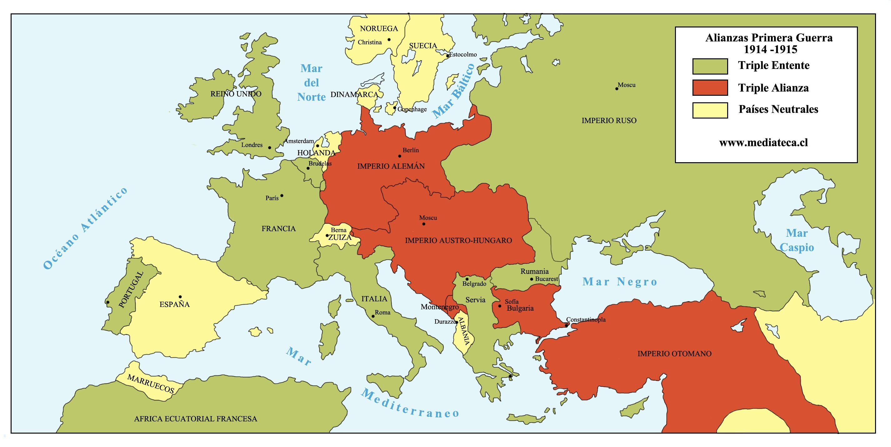
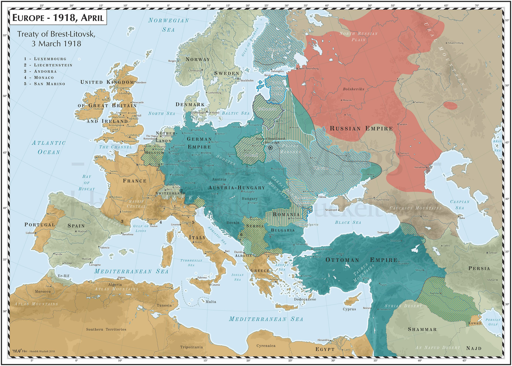

Первая мировая война это дна из самых широкомасштабных войн в истории человечества. Формальным поводом к войне послужили события в Сараеве, где 28 июня 1914 года боснийский серб Гаврило Принцип убил наследника австро-венгерского престола эрцгерцога Фердинанда и его морганатическую супругу Софию Хотек.
1914 год (до войны)
1916 год

1918 год
